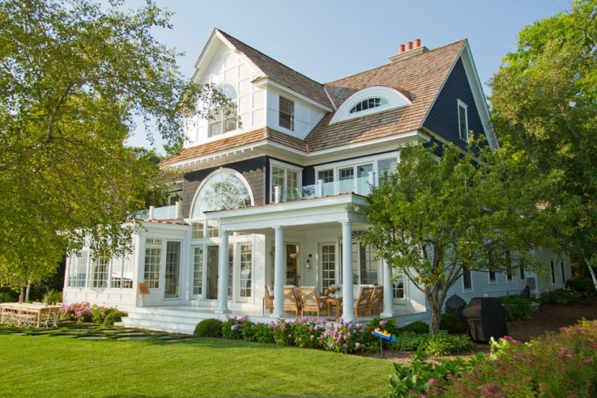
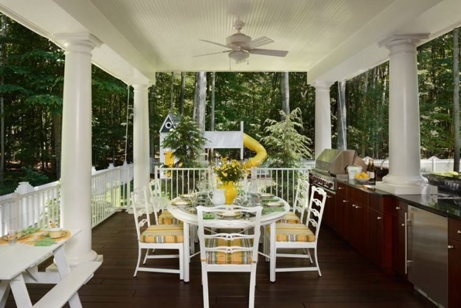

.png)
.PNG)
.PNG)
.PNG)
.PNG)
.PNG)
.JPG)
.JPG)
.PNG)
.PNG)


all images via the Cottage Company of Harbor Springs
I don’t know about you, but after Sunday night’s Mercer basketball game, I needed some cheering up. The Cinderella story of this year’s NCAA tournament came to a halt too soon. Tennessee played like a powerful team, and Mercer just couldn’t get past them to ring much of anything. I hope Tennessee goes all the way. Enough said. So let’s find a happy place today. 🙂
Aren’t these cottages cute? I love the dark upper half with the white bottom half. They were built by The Cottage Company of Harbor Springs, Michigan. Rob and Vee Mossburg founded this company that builds homes and developments and provides interior design services. They and their team do it all. As I viewed their portfolio, I thought their homes and rooms just shouted spring time. See if you agree.
I think the one above would be a wonderful place for an Easter morning brunch, and that little kitchen below is just precious. I want those tiny upper glass cabinet doors. And don’t forget to take note of that pretty ceiling.

The next two photos are from their Lakeside Cottage. Again, I am loving the ceiling.
And that island! I need something like that in an office to do my blog work. (Hubby are you reading??)I really liked the Walloon cottage with its stone fireplace and soft yellow fabrics.
Super comfy looking chairs? (But how do you keep that clean?)
Their Lilypad Cottage is waaaaay more patterned than I can handle (even if it is gingham,) but it certainly seems like a super cheerful home – and very spring like. 🙂
More patterns here. I think they really like colorful patterns in this home.
The offices of The Cottage Company are in a live-work building.I believe the Mossburgs live above them. Goodness, I would love all those windows!
Here is another live-work building they developed. Just look at all the sherbet colors!
Several years ago, they purchased property and made plans to build a boutique hotel named Hotel Janelle in Harbor Springs . Unfortunately, that was at the time our economy took a nosedive, and the project was stopped. I am not sure where the project stands financially right now. I read several articles that did not sound very promising, and then I read another that said it had been sold, but Rob Mossburg would still be in charge of the development. Not sure. I do know Sears Architects designed it, and here is a rendering of the proposed hotel.
It looks like it would have been a lovely place (or perhaps it is going to be a lovely place.)
Have these rooms gotten you in the mood for spring? Our spring like 80 degree weekend weather is dropping back to below freezing by mid week. A number of trees and shrubs have begun to bloom. I hope this next cold snap does not affect them, and more than that, I hope spring weather has arrived where you are. 🙂
Could you live in any of the rooms in today’s post? I always fear that rooms with a lot of florals are too feminine, and the male members of a family won’t like them…but I could be wrong. What do you think?
Happy Spring!


.PNG)
Beautiful sunny rooms and buildings! Can you believe in our neck of the woods the schools are on delay schedules due to …SNOW?!
My husband, daughter, granddaughter and I just returned from 89 degree weather on a Disney cruise. All the females wore flip flops on the flight home and our toes turned blue walking to the car when we returned to Asheville.
How exciting that Mercer beat Duke!!!! We were all happy when we realized that ESPN was on one of the channels in our room…all the other channels were Disney movies. With all the upsets I am thinking most people’s brackets must look a mess! I do want to say “Welcome to the Southern Conference!!!” The SC tournament is in Asheville next March. We always go with good friends and stay the entire weekend. You should make plans to go. It is a lot of fun and you could visit the Biltmore House while you are in town.
Hope your spring break is soon and sunny!!!
—————————————————————-
I can believe it. I went to Asheville one spring break and got caught in 13 inches of snow one year! Never again. A Disney cruise! We are all jealous!!! How very fun. 🙂 We will have to check our calendars for next year. Our middle child is a huge basketball fan, so I know he would love it.
Kelly
Kelly I saw this post yesterday and had to take another look. Some of these rooms are so inviting. Thank you for the introduction to this firm and their work.
———————————————————–
Thank you for coming back for a second look, Marken. The rooms are inviting. Be sure to visit their website to check out more of their work.
Kelly
Kelly, Our pastor would agree with you on Tennessee. He is a HUGE Tennessee fan. Let’s just say I’ll cheer them on because they are SEC. I love the beaded board ceilings. I hope to do that one day in our home. I have to plant the seed with my hubby and let it take root. That could take a while. lol I agree that the gingham room is a bit much on the pattern side. Too busy for me. I hope this is the last blast of cold we get. I am ready for Spring to stay around. This weekend and net week look very promising! Happy Spring to you too!
———————————————————-
Your pastor should be quite happy with last week’s game then. Good luck to Tennessee. I hope this is the last blast of cold weather as well Jayne, but there always seems to be one last little bit of it around Easter.
Kelly
Kelly,
I love the second image (or the last, can’t quite decide which one I like best!) that would be for the cottage exterior. Then, I’ll take one of each of the interior rooms shown to fill the charming facade of my new home, please.
xo,
Karen
————————————————————-
I’ll send them all right out to you, Karen. 🙂 I thought the two tone exteriors were quite charming too.
Kelly
Love, love, the architectural style and all their interior design. Happy to see color back in the fabric choices as well as the wallpaper, although that gingham check may be too much even for me…. Spring – I’ve heard rumors it’s on the way. Expecting a powerful nor’easter to roll through the southern New England coastline tonight, dumping several inches of snow and bringing gale force wind. Batten down the hatches, here we go, again. Thanks for reminding us that somewhere there are warm temperatures and gardens beginning to bloom.
————————————————————
The weather up your way sounds terrible tonight! I hope you are safe and snug wherever you are Paula. Yes, somewhere there are warm temperatures, but unfortunately it is not here tonight either. Maybe the weekend will be better for all of us.
Kelly
Oh I love your website and these homes are simply perfect! I loved each one! The colors and well..everything was just what I like. Thanks so much for posting these photos.
————————————————————
Kelly, thank you for your enthusiasm for Talk of the House! I am so glad you loved the cottages in the post.
Kelly
How charming and I love the kitchens. I’m not much of a floral person either, so I’d have to put some neutrals and beachy blues, but they are full of character!
————————————————————
The cottage kitchens always seem to be full of character and details worth copying. I would bring in some neutrals as well. 🙂
Kelly
Kelly,
I love the green and white gingham wall paper. It looks so fresh. It would be so cute in my classroom! I have one wall in my classroom green and the rest of the walls are cream colored. I think it is soothing right now but the gingham would be fresh and fun! I like the first home in this post. The darker color on top of the white is so neat. Are you switching from your green décor to yellow soon? I know in the past you Spring it up with yellow. I love the green on your porch right now and I am looking for cute outdoor pillows to add to screened in back porch. I am afraid that I am not as talented as you are in the sewing area. I usually beg my Mom to give me a hand when it comes to sewing projects. Thanks for sharing the inspiring Spring-like post! It is snowing here again tonight.
—————————————————————
Green gingham does look so very fresh! Love the idea of it for a classroom. I will probably bring in some yellow, but I am thinking of mixing it with the green this year for a little different look. I hope your snow melts soon and spring makes its arrival.
Kelly
Love your pictures today, I really need to see some spring. I live in southern Pennsylvania and we are expecting snow tomorrow…… again. Our tulips are coming up and I am afraid they will freeze.
Keep the sunshine coming!
Jeanne
————————————————————–
Jeanne, I am so sorry that the snow is invading your area yet again. Yes, I will try to keep the sunshine coming for you. 🙂
Stay warm.
Kelly
Oh, I love these cottages. They really do have a wonderful Spring feel to them. Mary, I had that green gingham wallpaper in my kitchen too. I still have a bit of it in my laundry room and it makes me happy and reminds me of my children when they were little ( I put mine up in the 70’s). I agree with you Kelly about the white chairs. I am always skeptical of dinning rooms that have white upholstered chairs. Obviously only adults ( really neat ones) eat at these tables. To answer your question about florals in rooms….I do think they can be too feminine for a master bedroom,that said,we had a very vintage looking paper in ours for years. My husband liked it because it reminded him of his much loved Aunt Molly. We we built our house in the mid-seventies, I was in love with wall paper…..I didn’t know the dark side of stripping it off…..I learned the hard way. I still have a bit left,some lovely red floral in a bathroom,but I won’t be putting up any more.
Silly question: do advertisers really think your readers are interested in natural acne treatments???? so annoying
————————————————————
“The dark side of stripping wallpaper” What a great way to put it!! Yes, I have endured that dark side too many times as well. I don’t think those of us with experience with it are going to be as quick to jump on the wallpaper bandwagon this time..no matter how many times they tell us “This is easy to remove.” I know I won’t fully believe them.
Your question about spam is not silly. Those spam comments are annoying, and I removed the natural treatment one…just didn’t see it fast enough. I have a spam catcher on my website, but sometimes it misses a couple, and they make it through. Technology is an amazing thing.
Kelly
I was sorry to hear about Mercer…but I’ve luckily still have the Wisconsin Badgers to root for. Those are beautiful homes…very springy indeed! Think spring is a ways off! 😉
————————————————————
Lucky you that your team is still in it. Good luck to them! I cannot believe winter is still hanging around this late. I don’t think it will ever leave, There is frost on my car this morning, and we are in the deep South! I guess we will all just have to live our spring through photos.
Kelly
Hi Kelly
I love all of the springy inspiration you found. Yellow and white and green = SPRING to me. My favorite pic might be #3 and loved the glimpse of playhouse/swingset in the background. My husband starts building ours tomorrow so I am always trying to get ideas. Although now that he is starting I guess I’d better stop finding new ideas:-)
————————————————————–
There is a photo of just the swingset on the website. Be sure you take a look at that and show it to your husband. I am sure he will appreciate more ideas you find in it. LOL We don’t have small children around here, but that play area makes me wish that we did! 🙂
Kelly
Beautiful homes. I would be happy to live in any of them!
The gingham checked wallpaper reminded me of my old wallpaper I had in my kitchens back in the 90’s. I still miss it, but times change. I loved the rug in that room-gorgeous colors.
Definitely loved the wood ceilings. Very nice.
Thanks for the fun tour.
————————————————————–
That wallpaper (and all the corresponding yellow) reminded me of the bedroom my sister and I shared growing up…a bright green checked wallpapered room with yellow comforters on the bed. The rug in the room in the post was amazing, wasn’t it? Glad you enjoyed the tour, Mary.
Kelly
You always post such fantastic homes that I could never decide which one I love better. I just wish I had enough money to have them decorate my house. I swooned with each picture but I have to agree with you, Kelly, and say that gingham room was a bit too much for me too. Don’t ever stop your wonderful blog…I enjoy it.
—————————————————————–
Thank you Cheri. I am happy that you like all the houses. There are soooo many beautiful ones out there!!
Kelly
Hello Kelly, and Cathy from Calgary (such a small blogging world)! I am sure you as well are quite done with winter. These pictures are divine, love them all and the outdoor ones are making me just a little envious right now. I do love flowers however I’ll take them bouquet form or in the Costswolds would be fine by me. Sure wish it would be warmer here for Spring break.
———————————————————–
Bring on the flowers of spring and some warmer weather, right? I hope you get some spring like weather soon, too.
Stay warm.
Kelly
I love all of them! They are fabulous examples of cottage. I don’t know if I could live with a lot of pattern but I think I can. I get tired of anything after so long.
————————————————————–
I agree. They are such fine examples of cottage style…love the attention to detail from this company. Like you, I get tired of things after a while and work better with a neutral background that can easily be changed. Thank you for taking the time to leave a comment, Kathy.
Kelly
So bummed about your team’s loss–but they surley did shake things up! I guess you saw UK knocked out WS –can we say–35-1! Wow! Unreal for a freshman team. So proud of The Big Blue Nation. GO CATS! 🙂 Love the spring cottages–spures me on to get my spring projects finished and cleaned up for Easter. Thank you for so many great ideas! Also to the other blogers on here–so much creativity and talent! Love Talkofthehouse and the many doors it has opened for us all to share! Thx, Kelly—hope Spring Break will soon be here for you! Wish I could take you to the Spring Flower Show at Disney with my girls and me!!
————————————————————–
Your team blew out the brackets for a lot of people! My son was betting on WS, but UK did amazing. Congrats to you! Lucky you getting to go to the flower show at Disney. I bet that will be GORGEOUS!!! Enjoy and take notes on all their planting.
Kelly
Love the first two homes (cottages) and that porch is to die for. I can’t even fathom what it would be like to live that lifestyle. Our home is 2700 square feet and at times I feel we really don’t need all this. I tease my husband about downsizing and buying a smaller cottage type home and living lakeside in Michigan when he retires. Most likely we will stay here though. I love Michigan. So many great places to visit. I’m sure the south by you has some pretty spectacular developments, as so many up here move to the south it seems. Well, I am ready for Spring for sure. The sun is shining this am, oh but we are getting snow once again tomorrow. Ha! Thanks Kelly for the sweet wake up. Sigh! P.S. Sorry your team lost but I am sure you will find a way to bring smiles back to your family members faces. Team Kelly!
Debra
————————————————————
Debra, I hate that you are getting still MORE snow tomorrow. I am about to think it is never going to end for all of you this year! From what I can tell, Harbor Springs must be about an hour from Mackinac Island – a place that is on my bucket list. So I know there are beautiful places to see in the lake region of Michigan.
Thanks for the condolences on the game. There’s always next year!
Kelly
Hi Kelly,
I am with you all the way regarding these gorgeous cottages… love the large verandah; cute little kitchen with the gorgeous ceiling (and those glass cupboard doors which I have in our cottage kitchen!; and finally I too could not stand having all that pattern with the wallpaper.
Lucky you to have spring arrive! Here in Calgary, on the first official day of spring, we had a blizzard which dumped a ton of snow which is still covering everything with the temperatures staying around -10C and no end in sight!! Oh well, that is what we come to expect here on the Canadian prairies!
Thanks again for a lovely post!
Your freezing friend, Cath 🙂
————————————————————–
I wish I could bring you some warm sunshine and melt that snow away for you. It is almost April. It is TIME for it to go. 🙂 Happy you liked the cottages. (Jealous of your cupboard doors!)
Stay warm! (and know that we have freeze warnings out for Wed. morning here in the deep South.)
Kelly
You find the best homes to share!
I like all these, and I am join to save a few of your photos here. I actually like that one with all the pattern — reminds me of Diamond-Baratta.
————————————————————-
I had not thought about the comparison to Diamond-Baratta, but now that you point it out, it does have common elements with them. Great eye!
Kelly
I am a Mercer grad(via Georgia Baptist Nursing School) and I was hoping for Mercer to go further, but hey, they shook up things for sure. Love all the patterned wall paper even though I have sworn I will never have wall paper in my house EVER!!:)
————————————————————
They most certainly did shake things up! And I am so with you on never wanting to wallpaper another wall again. I’ve done way too much of that in our homes. (That is why I tell myself not to look at all the pretty wallpaper that has been coming out recently.)
Kelly
I’m ready to move into either the Walloon or the Lakeside Cottage! They all look wonderful — and I love florals — but I’m with you; the others are too busy. Thank you for such a cheerful post!
———————————————————–
I think I will take Lakeside, so you can have the Walloon, Barbara. 🙂 Happy you liked the springtime post.
Kelly
Watching in Dublin, we were sorry to see Mercer lose. My team, Illinois, lost to my husband’s team, Clemson, earlier Sunday too. Oh, well, maybe next year. Love the cottages, but you’re right about the one with all the green gingham on the wall, it’s a bit much. I’d have to redo it for Autumn. I find that I like my rooms to reflect the different seasons & that one definately is a “Spring” room. Maybe I just need four different houses for each of the seasons. LOL! Love your blog & have a great week!
————————————————————-
It was a sad sad game, Teresa. Sorry your team also lost (even if it was to your husband’s team.) I agree that some of us need four houses for our decorating plans. 🙂 (I would settle for just 2.) Glad you are enjoying the blog. You have a good week too.
Kelly